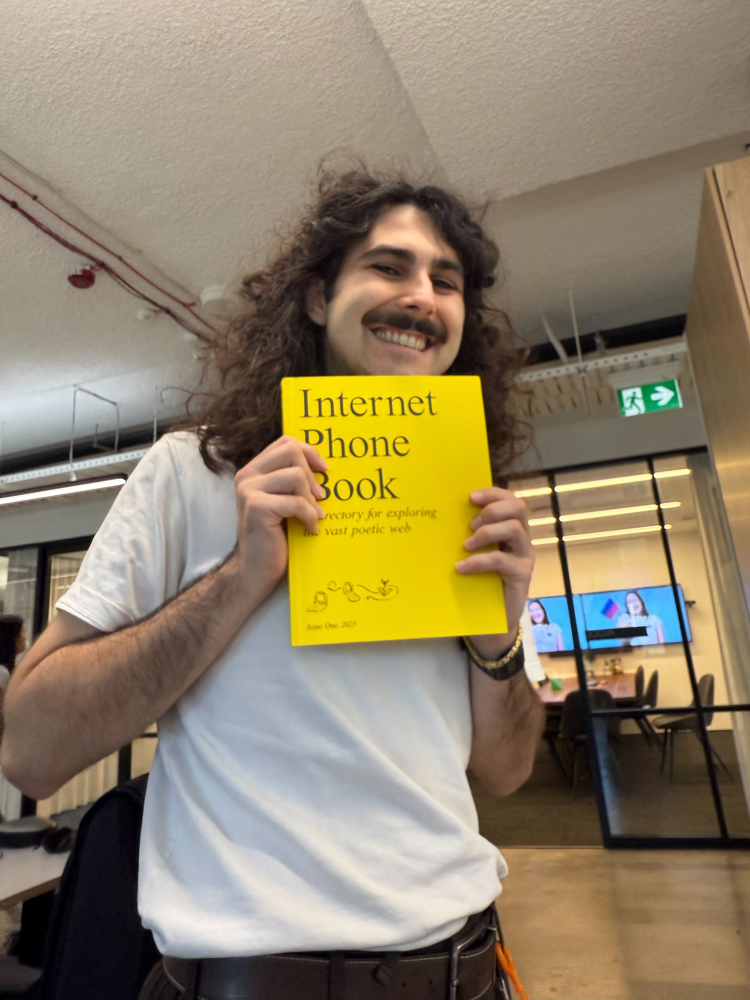
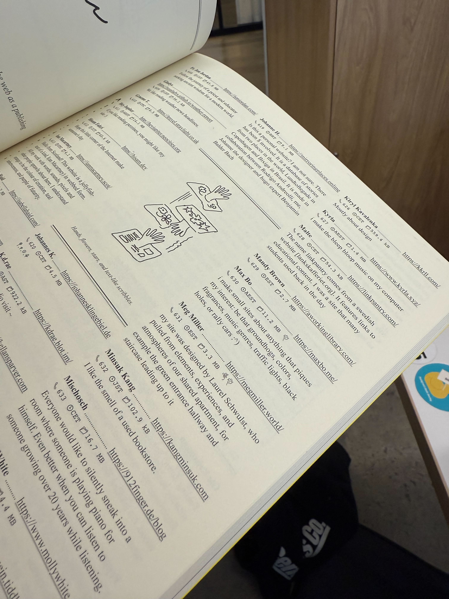

May 25, 2025
I am very pleased to announce that maxbo.me is featured in the Internet Phone Book, [a]n annual publication for exploring the vast poetic web, featuring essays, musings and a directory with the personal websites of hundreds of designers, developers, writers, curators, and educators.
While I have yet to receive my copy, I managed to catch a very small glimpse of my entry in the video hosted on internetphonebook.net/pre-print-site:
ENHANCE
📞 630 🕒 AEST 📁 11.2 MB 🌼
i make small sites about anything that piques
my interest - be that groundhogs, colors,
fragrances, music genres, traffic lights, black
holes, or rally cars :^)
📞 630 means you can punch
into the Phonebook's Dial-a-site and you'll get maxbo.me. How fun.
This book looks to have been built with such love and care for the Poetic Web. I extend a sincere thank-you to Kristoffer Tjalve and Elliot Cost for including me in this wonderful project. I eagerly await my copy.
maxbo.me, and her wider closure of subpages and outlinks, has been wonderful for me.
It taught me much about the web platform, JavaScript, HTML, CSS, Web Components, JavaScript modules, dataviz, Observable Plot, DuckDB, Parquet, SQLite, Cloudflare, and the fucking Cache-Control header.
It led me to the wonderful communities of web aficionados on are.na, val.town, the htmx Discord, and html.energy, who care deeply about the web platform and what it can bring people.
It pulled me out of a rut of burnout in early 2022, reigniting a love of programming and software engineering.
It has brought me a lot of joy, and it makes me happy to see that it brings joy to others too.
~ Max[May 28 2025] Update! It arrived!
 